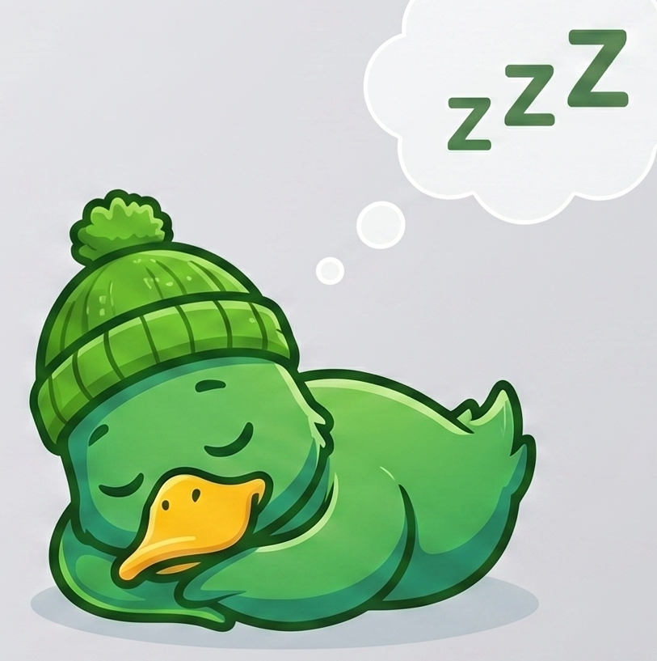
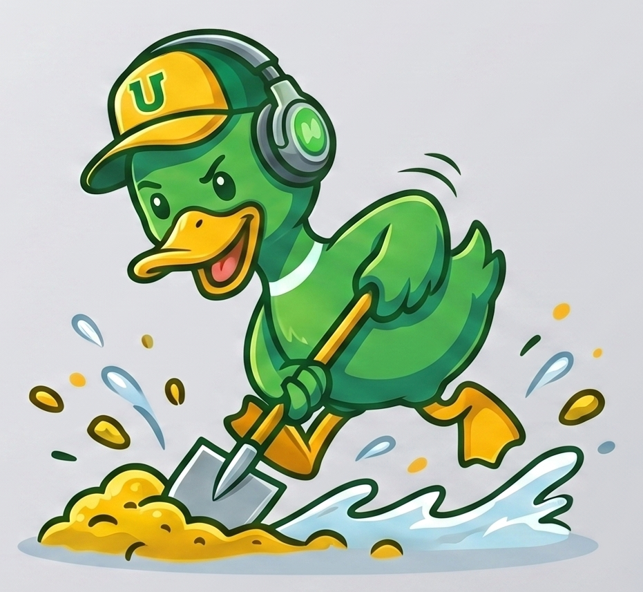
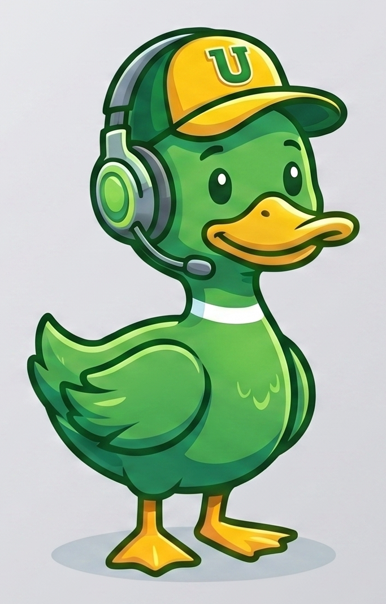

✉️
Sends email — after you OK it
Drafts replies in your voice and waits for a thumbs-up before anything leaves your outbox. No surprises.
Your friendly desktop duck.
An AI sidekick that waddles into your notch, does the boring stuff — email, research, calendar — and quacks when it needs you. You stay in flow; Quacky does the busywork.
Apple Silicon · macOS 13+ · ~16 MB · free & open source
Four things, done well — and always with your say-so on anything that matters.
Drafts replies in your voice and waits for a thumbs-up before anything leaves your outbox. No surprises.
Point it at a topic or a subreddit; it browses, reads, and hands back a tidy summary — no tabs required.
Knows your schedule, so it politely declines on conflicts and accepts when you're free. No more "let me check."
A tiny mascot tucked in the menu-bar notch. It nudges you out loud, only when it actually matters.
Quacky tells you what it's up to at a glance. Give one a poke 👇



Quacky uses a private second macOS profile so it can work without touching your screen. Here's the short version — the full walkthrough lives in the RUNBOOK.
Clone the repo and launch the orchestrator (the duck's brain) from Terminal:
git clone https://github.com/SarveshaKumarKS/Quackhacks-2026.git
cd Quackhacks-2026
./setup/start.shOpen Quacky.app — the duck pops into your notch. Type or speak a task and watch it waddle to work. First run asks for mic + permissions; grant once and you're set.
It's free, open source, and a little bit silly.
⬇ Download Quacky for macOS